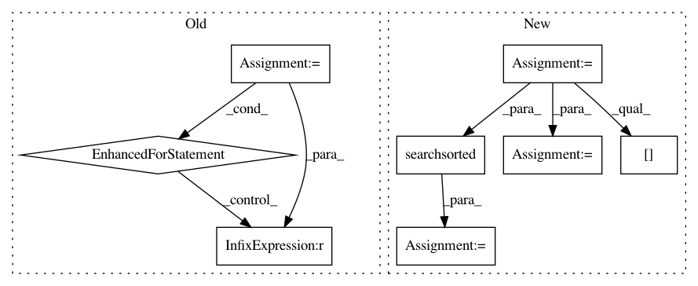

0ac2bf1c2cafee4cc9555c9f09a17143b05b1a88,brian2/synapses/spikequeue.py,SpikeQueue,prepare,#SpikeQueue#Any#Any#Any#,91
Before Change
max_events = 0
synapse_sources = synapse_sources[:]
for source in xrange(self._source_end - self._source_start):
indices = np.flatnonzero(synapse_sources == (source +
self._source_start))
size = len(indices)
self._neurons_to_synapses.append(indices)
max_events = max(max_events, size)
n_steps = max_delays + 1
// Adjust the maximum delay and number of events per timestep if necessary
// Check if delays are homogeneous
After Change
// Prepare the data structure used in propagation
synapse_sources = synapse_sources[:]
nsource = self._source_end - self._source_start
ss = np.ravel(synapse_sources)
I = np.argsort(ss)
ss_sorted = ss[I]
splitinds = np.searchsorted(ss_sorted, np.arange(self._source_start, self. _source_end+1))
self._neurons_to_synapses = [I[splitinds[j]:splitinds[j+1]] for j in xrange(len(splitinds)-1)]
max_events = max(map(len, self._neurons_to_synapses))
n_steps = max_delays + 1
// Adjust the maximum delay and number of events per timestep if necessary
In pattern: SUPERPATTERN
Frequency: 3
Non-data size: 8
Instances
Project Name: brian-team/brian2
Commit Name: 0ac2bf1c2cafee4cc9555c9f09a17143b05b1a88
Time: 2014-03-06
Author: dan.goodman@ens.fr
File Name: brian2/synapses/spikequeue.py
Class Name: SpikeQueue
Method Name: prepare
Project Name: scipy/scipy
Commit Name: 1af61eee76fc63e98ba5ad85ad82fbd18111b8e9
Time: 2014-01-28
Author: joel.nothman@gmail.com
File Name: scipy/sparse/data.py
Class Name: _minmax_mixin
Method Name: _min_or_max_axis
Project Name: stellargraph/stellargraph
Commit Name: 19efebad71288796c490f7dfcc4092afee646611
Time: 2020-05-27
Author: kieranricardo@hotmail.com
File Name: stellargraph/data/explorer.py
Class Name:
Method Name: naive_weighted_choices